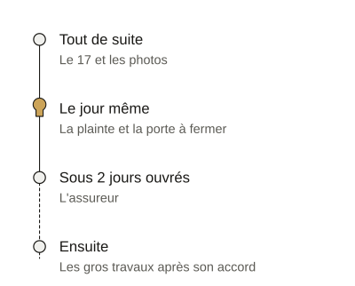

- Accueil
- Guides de serrurerie
- Après un cambriolage, dans l’ordre
Après un cambriolage : que faire, et dans quel ordre
Après un cambriolage, n’entrez pas si quelqu’un peut encore être là : appelez le 17. Ne touchez à rien avant la police mais photographiez l’effraction.
Portez plainte sur place ou en ligne. Faites ensuite fermer la porte.
Déclarez le vol à votre assureur sous 2 jours ouvrés, ou dans le délai plus long de votre contrat.

Tout de suite : appeler la police et ne rien toucher
Si la porte est forcée et que quelqu’un peut encore être à l’intérieur, n’entrez pas. Appelez le 17 (Police secours).
Si quelqu’un est blessé ou en danger, appelez le 112.
Une personne sourde ou malentendante joint les secours au 114 par SMS, par tchat ou en visio.
Ne touchez à rien en attendant la police ou la gendarmerie. Ne nettoyez pas et ne rangez pas : les traces et les indices servent à l’enquête.
C’est le moment de prendre des photos : les traces d’effraction, la porte et sa serrure, les pièces fouillées.
Ces photos iront dans votre dossier d’assurance.
Le jour même : porter plainte
Allez au commissariat ou à la gendarmerie de votre choix, même hors de votre commune.
Policiers et gendarmes doivent enregistrer votre plainte.
On vous remet à la fin un récépissé qui prouve votre plainte. Gardez-le pour votre dossier d’assurance.
Si vous ne connaissez pas l’auteur, la plainte pour un vol ou un cambriolage peut se faire en ligne.
Un policier ou un gendarme peut ensuite vous recontacter pour la compléter.
Préparez la liste de ce qui a disparu et ce qui prouve que c’était à vous : factures, bons de garantie ou photos d’avant le vol.
Le soir même : faire fermer la porte
La mise en sécurité n’attend pas. Vous devez même prendre les mesures qui évitent un nouveau vol : la fiche officielle cite la pose d’une nouvelle serrure.
Les grosses réparations attendent en revanche l’accord de votre assureur. Seules les mesures d’urgence pour sécuriser le logement y échappent.
Le cylindre est la pièce où entre la clé. S’il a été arraché ou cassé, il faut en poser un neuf pour que la porte ferme à clé.
Demandez à garder l’ancien : il porte les traces de l’effraction.
Si la serrure ou le cadre sont trop abîmés, le serrurier pose une fermeture provisoire en attendant la réparation.
Remplacer toute la serrure ou blinder la porte se décide plus tard et au calme.
Faites changer le cylindre si vos clés ont été prises avec vos papiers, même sans porte forcée : le voleur a votre clé et votre adresse.
Si c’est nous que vous appelez
Un de nos serruriers partenaires vient de jour comme de nuit. La nuit, il fait le nécessaire pour que la porte ferme ; le reste se décide de jour.
Il fixe le prix de la mise en sécurité dans un devis écrit avant de commencer. Le déplacement et le diagnostic coûtent 75 € TTC, ou 95 € TTC de 21 h à 6 h.
Ils sont compris dans le prix si vous acceptez le devis. Vous les réglez si vous le refusez. Un SMS vous redit cette règle après l’appel.
Un devis de remise en état fait partie du dossier que l’assureur attend.
Le serrurier vous remet ensuite une facture détaillée. Rangez-la avec le récépissé et les photos.
Faire fermer une porte forcée, de jour comme de nuitSous 2 jours ouvrés : l’assureur
Déclarez le vol à votre assurance habitation dès que vous le constatez.
Vous avez 2 jours ouvrés, ou plus si votre contrat vous laisse davantage. La loi interdit un délai plus court (article L113-2 du Code des assurances).
On compte cinq jours ouvrés par semaine : ce sont les jours travaillés.
Votre contrat dit comment déclarer le vol : en agence ou par courrier, en ligne ou par téléphone.
Une lettre recommandée papier ou électronique vous laisse une preuve écrite.
Le vol commis avec des clés volées ou perdues n’est couvert que si votre contrat le prévoit : lisez ce passage de vos conditions.
Dans les jours qui suivent
- Une carte bancaire a été volée : faites opposition auprès de votre banque ou au 0 892 705 705, ouvert jour et nuit (numéro payant).
- Un badge d’accès à l’immeuble a disparu : prévenez le syndic de copropriété.
- Vous êtes locataire : prévenez aussi votre propriétaire ou votre agence.
- Vous avez besoin d’en parler : le 116 006 écoute et oriente les victimes gratuitement, tous les jours de 9 h à 20 h.
Ce qu’on se demande après un cambriolage
Combien de temps pour déclarer un cambriolage à l’assurance ?
Vous avez 2 jours ouvrés après la découverte du vol, ou plus si votre contrat le prévoit. La loi interdit un délai plus court.
Peut-on changer la serrure avant l’accord de l’assureur ?
Oui, pour sécuriser le logement : l’urgence n’attend pas son accord. Les grosses réparations l’attendent. Gardez la facture.
Peut-on porter plainte en ligne pour un cambriolage ?
Oui, si vous ne connaissez pas l’auteur. Sinon, la plainte se fait sur place ou par courrier.
Combien de temps a-t-on pour porter plainte après un vol ?
Six ans à partir du jour du vol, car un cambriolage est en principe un délit. Portez plainte vite : l’assureur attend le récépissé.
Sources
- Service-public.gouv.fr : « Vol, cambriolage », vérifiée le 19 juin 2026 et lue le 26 octobre 2026.
- Service-public.gouv.fr : « Assurance habitation et vol : conditions de prise en charge », vérifiée le 10 septembre 2025 et lue le 26 octobre 2026.
- Service-public.gouv.fr : « Porter plainte », vérifiée le 8 juillet 2026 et lue le 26 octobre 2026.
- Service-public.gouv.fr : numéros d’urgence et d’écoute, vérifiée le 25 août 2026 et lue le 26 octobre 2026.
- Service-public.gouv.fr : « Vol de sa carte bancaire », vérifiée le 6 février 2025 et lue le 26 octobre 2026.
- Code des assurances : article L113-2 en vigueur, lu sur Légifrance le 26 octobre 2026.
- Ministère de l’Intérieur, Ma Sécurité : « Cambriolage : comment réagir et limiter les risques ? », mise à jour du 13 juillet 2026 et lue le 26 octobre 2026.